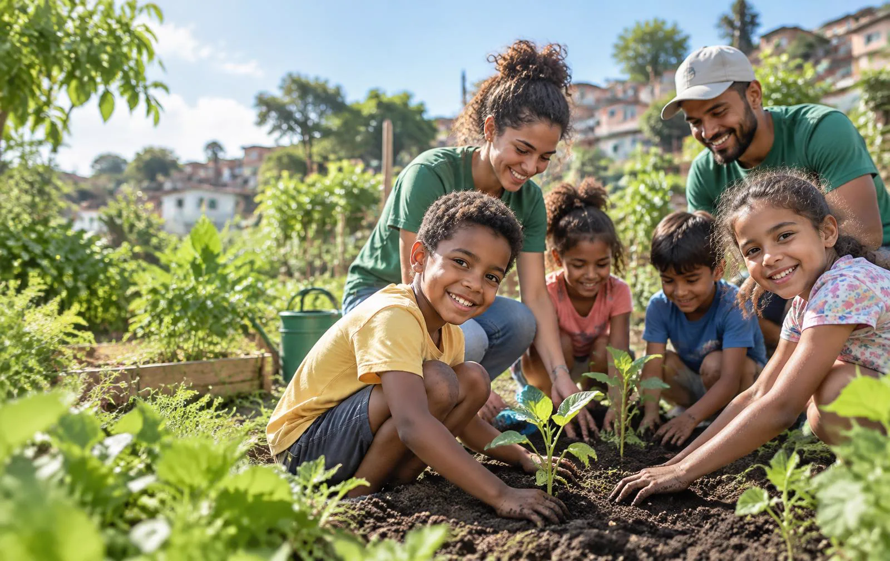

Missão
Fortalecer comunidades por meio de educação, cuidado e participação cidadã.

Há 14 anos construindo futuros
Conectamos pessoas, oportunidades e afeto para que cada comunidade possa florescer com autonomia.
Quem somos
Nascemos do encontro entre moradores e educadores que acreditavam no poder de uma comunidade mobilizada. Atuamos onde educação, segurança alimentar e meio ambiente se encontram.
Escutamos, construímos junto e fortalecemos soluções que já vivem em cada território.
O que nos guia
Fortalecer comunidades por meio de educação, cuidado e participação cidadã.
Um Brasil em que toda pessoa tenha oportunidade de construir seu próprio futuro.
Escuta, respeito, transparência, diversidade e transformação coletiva.